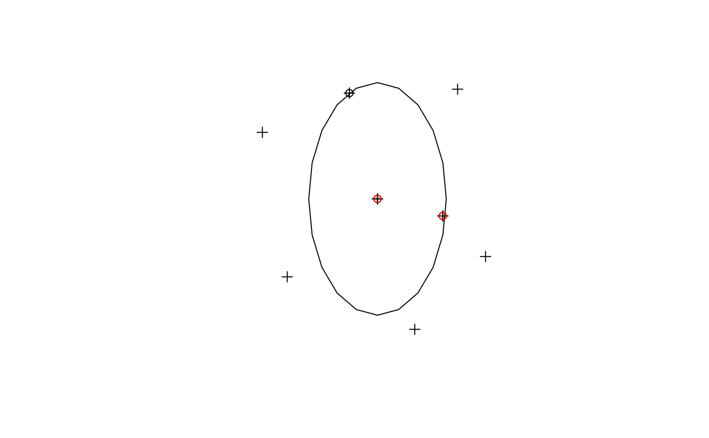

stplanr
part of  0.2.7.9001
0.2.7.9001
Crops spatial object x to the bounding box of spatial object (or matrix) b
Source:R/geo-functions.R
gclip.RdThis function is a cross between the spatial subsetting funtions such as sp::over(), rgeos::gIntersects() etc, and the cropping functions of raster::crop() and rgeos::gIntersection(). The output is the subset of spatial object a with an outline described by a square bounding box. The utility of such a function is illustrated in the following question: http://gis.stackexchange.com/questions/46954/clip-spatial-object-to-bounding-box-in-r/.
gclip(shp, bb)
Arguments
| shp | The spatial object a to be cropped |
|---|---|
| bb | the bounding box or spatial object that will be used to crop |
Examples
#> Warning: Spatial object is not projected; GEOS expects planar coordinatesplot(cents)clipped <- gclip(cents, cb)#> Warning: spgeom1 and spgeom2 have different proj4 strings#>#> Warning: Column `gclip_id` joining factors with different levels, coercing to character vectorclipped$avslope # gclip also returns the data attribute#> [1] 3.076791 2.762529 2.814496points(clipped)gclip(cents_sf, cb)#> Warning: spgeom1 and spgeom2 have different proj4 strings#>#> Warning: Column `gclip_id` joining factors with different levels, coercing to character vector#> Simple feature collection with 3 features and 4 fields #> geometry type: POINT #> dimension: XY #> bbox: xmin: -1.535617 ymin: 53.8158 xmax: -1.519318 ymax: 53.82847 #> epsg (SRID): 4326 #> proj4string: +proj=longlat +datum=WGS84 +no_defs #> geo_code MSOA11NM percent_fem avslope geometry #> 1928 E02002363 Leeds 034 0.525161 3.076791 POINT (-1.535617 53.82847) #> 2029 E02002377 Leeds 048 0.408293 2.762529 POINT (-1.519318 53.8158) #> 2034 E02002371 Leeds 042 0.504460 2.814496 POINT (-1.530712 53.81756)